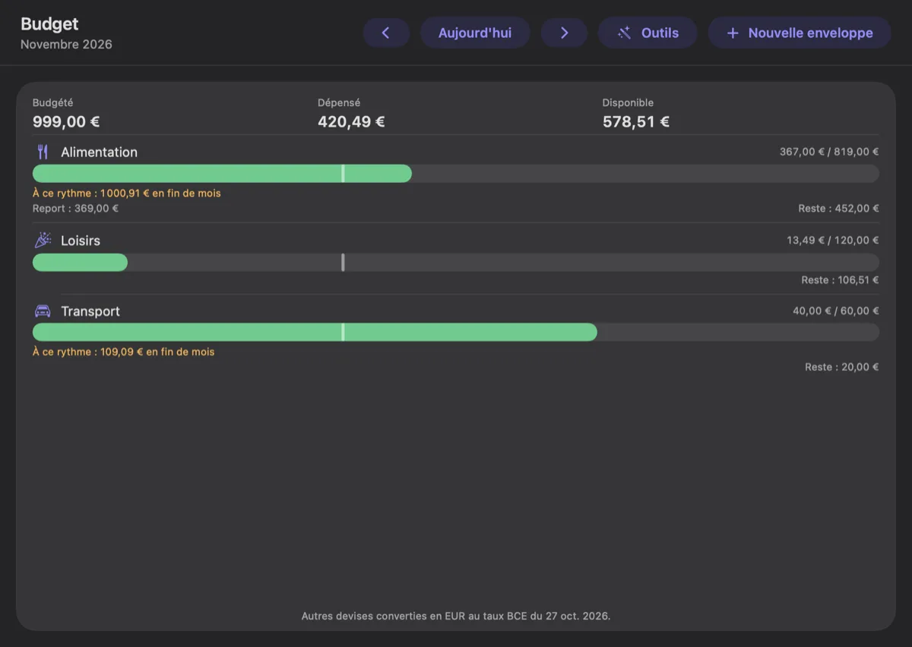

Enveloppes et budgets
Savoir ce qu’il reste, mois par mois.

Une enveloppe par catégorie et par mois : vous voyez d’un coup d'œil ce qu’il reste et si le rythme du mois est tenable.
Ce qu’il y a dedans
- Enveloppes mensuelles : une barre par catégorie, avec un trait qui indique où en est le mois.
- Report : le reste d’une enveloppe peut passer au mois suivant.
- Assistant : propose des montants d’après vos trois derniers mois.
- Déplacer de l’argent : d’une enveloppe à l’autre, pour un mois précis.
- Alertes : un message prévient quand le rythme actuel dépasse le budget.
- 50/30/20 : une vue besoins, envies et épargne.
- Récurrents : loyers, abonnements et salaires ajoutés automatiquement ou validés en un clic.
- Prêts et objectifs : échéancier, remboursement anticipé comparé (raccourcir la durée ou baisser la mensualité), montant à mettre de côté par mois.